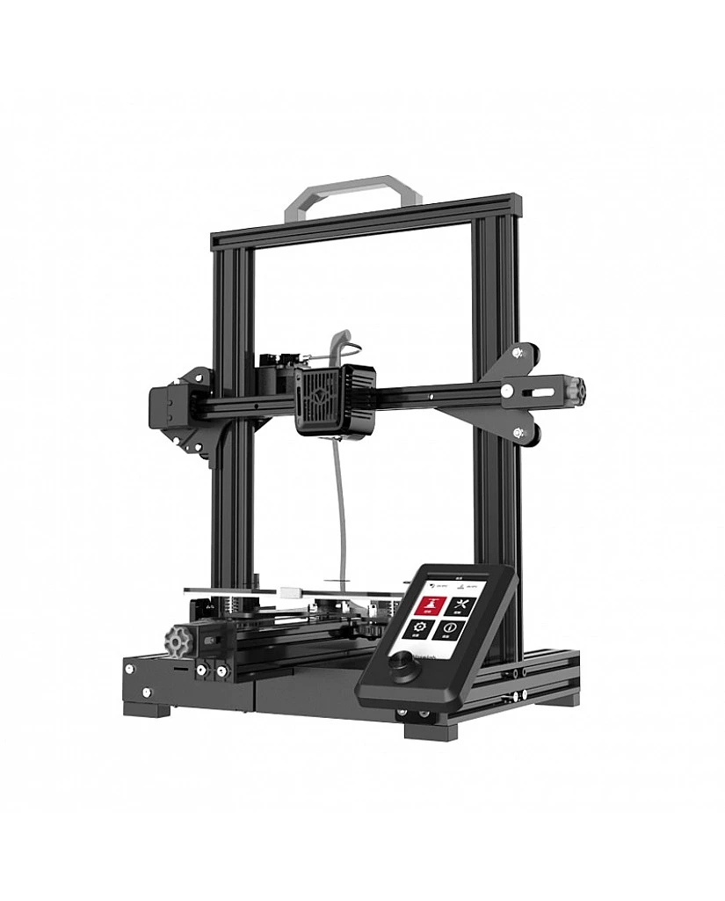
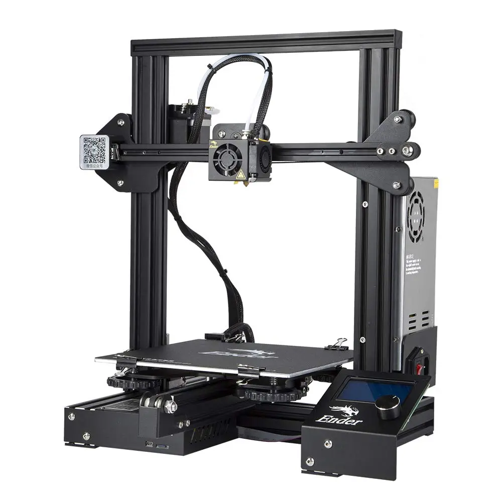
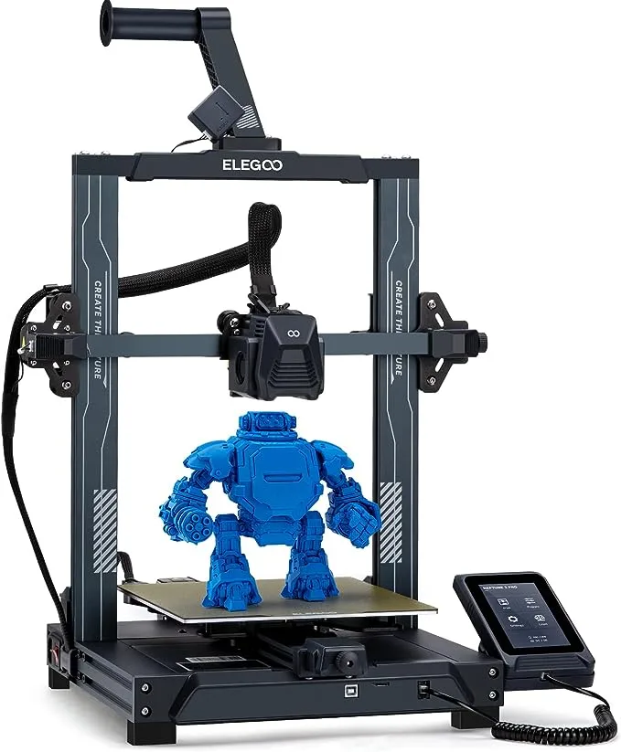

3D printing can be a fun and useful hobby to have. It is great for prototyping and creating objects that no one else would think of. From artists, cosplayers, mechanical designers, and hobbyists, 3D printing is for many!
The kind of printer I recommend for most people to start with are FDM printers due to their mostly simple setup and process. In comparison, resin printers require more effort to create usable and functional prints while still being able to create artistic pieces at the same time.
The video below will show you a demonstration of what FDM printers are capable of.
Credit: WildRoseBuilds, YouTube
Printers to buy
It can be hard to find the right printer to buy when starting out with in the hobby. These are choices that I recommend if you're on a budget.

Voxelab Aquila
Voxelab Aquila X2
Price: $150
Summary: Budget Ender 3 V2 Clone
For starters, the Voxelab Aquila X2 is one of the cheapest of the 3d printers available that gives you good value for the money.
The original Voxelab Aquila is a clone of the Creality Ender 3 below. The Aquila X2 is another clone to the Creality's updated Ender 3 V2, which goes for $220 at the time of writing this.
Due to the Aquila X2 being a clone of the Ender 3 V2, any of the aftermarket parts and upgrades will fit on this 3d printer as well. Assembly required.

Creality Ender 3
Creality Ender 3
Price: $170
Summary: Gold Standard
The Ender 3 is one of if not the most popular models of FDM 3d printer to purchase. Many 3D printing enthusiasts have started out on this 3D printer.
There are numerous amounts of upgrades and parts that can be added to this printer to make it perform better. It should be noted that the Ender 3 is an older model.
3D printers that will contain more features and better hardware/software for more or less the same price. That won't stop the Ender 3 from getting the job done. The Ender 3 will require assembly out of the box.

Elegoo Neptune 3 Pro
Elegoo Neptune 3 Pro
Price: $210 (At the time of writing)
Summary: Bells and Whistles
The Elegoo Neptune 3 Pro is a printer full of features that will enable it to produce higher-quality prints more reliably. Unlike the Aquila X2 and Ender 3, the Elegoo Neptune 3 Pro comes with auto bed leveling out of the box.
The Neptune 3 Pro comes with better extrusion system that will make it less likely for the printing nozzle to clog up, as well as making extrusion more consistent. That makes it capable of printing faster while keeping a quality print in comparison to the Aquila X2 and Ender 3.
Overall the performance and features of the Elegoo Neptune 3 Pro make it worth spending just a bit more of money. Assembly required.